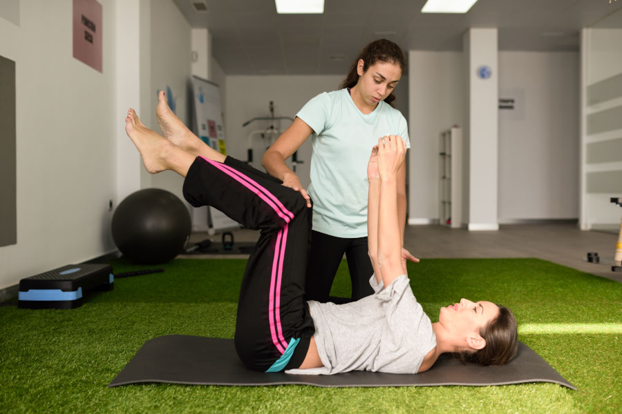

Wellness · 5 min read
Small Daily Habits That Keep Your Body Moving Well
Simple routines for posture, mobility, breathing and energy that fit into a busy day.
By AlignAsya Physiotherapy Team · July 2026

You don't need an hour at the gym to take care of your body. Most of the strain we carry — stiff shoulders, a tight lower back, heavy legs by evening — builds up from how we sit, stand and move through an ordinary day. A handful of small, consistent habits can do more for how you feel than an occasional intense workout.
Movement is meant to be spread out
The body responds well to frequent, gentle movement rather than long stretches of stillness followed by a single burst of exercise. If your day involves a desk, a commute or long periods on your feet, the goal isn't to "make up for it" later — it's to break up the day itself.
Consistency beats intensity. A two-minute stretch every hour will do more for your posture than a single long session once a week.
Four habits worth building
1. Set a movement reminder
Every 45–60 minutes, stand up, roll your shoulders, and walk a short distance. This resets your posture and keeps joints from stiffening, especially if your work is desk-based.
2. Breathe from your diaphragm, not your chest
Shallow chest breathing is common under stress and can quietly increase tension through the neck and upper back. A few slow, belly-led breaths through the day can ease this and support better posture from the inside out.
3. Support your sitting posture, don't fight it
Rather than forcing an upright position all day, set up your chair, screen and desk so good posture is the easy default. Small adjustments — screen at eye level, feet flat, lower back supported — reduce the effort needed to sit well.
4. Protect your sleep
Tissue recovery and pain sensitivity are both closely tied to sleep quality. A consistent wind-down routine and supportive pillow positioning can meaningfully change how your body feels the next day.
Habits are personal
What works for one person's shoulders may not suit another's knees or lower back. If you have a specific area of stiffness, discomfort or a past injury, a physiotherapist can help tailor these habits — and the exercises around them — to your body rather than a generic routine.
Start small
Pick one habit from this list and build it into your week before adding another. Sustainable change comes from small, repeatable actions — not a complete overhaul overnight.
Want a routine built around your body?
Our team can help you turn these habits into a plan suited to your posture, activity level and goals.
Book an AppointmentThis article is for general education and is not a substitute for individualized medical assessment or treatment.
← Back to all articles